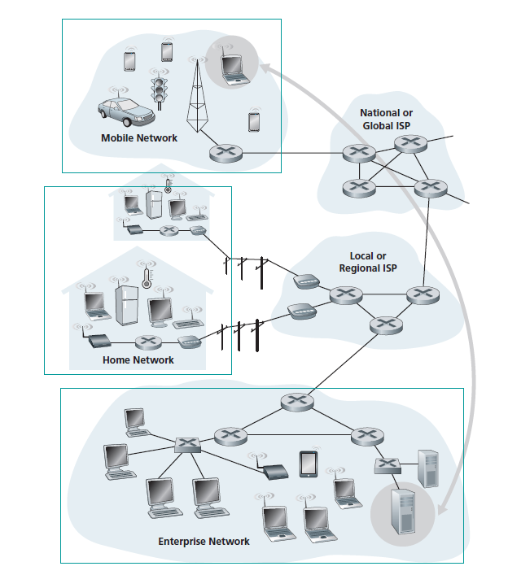
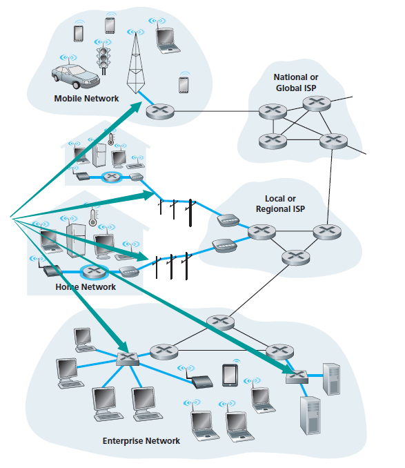

网络的组成
首先这里我们对网络进行一个逻辑上的定义，即在逻辑上的分为边缘，核心，接入网络三部分
下面几张图可以帮我们很好地理解这个问题
网络边缘 Network Edge
网络边缘即位于网络终端的节点，类似与数据结构：图中的叶子节点
接入网络 Access Network
接入网络既是将边缘接入Core的部分（图中箭头所指的部分），如果说Edge是n层，那么AN就是第n-1层

网络核心 Network Core
除去以上两部分，剩下的就是网络核心，网络核心主要当各级ISP提供（互联网服务提供商：诸如移动，电信等）
网络基本交换类型 （Switch Type）
电路交换 （主要是电话网络）
- 资源专用：闲时资源资源浪费
- FDM 频分复用
- TDM 时分复用
- 需要建立和拆除资源
- 服务质量有保证：因为是专用网络，不存在竞争和时延问题
分组交换(Packet-Switched Network)
- 资源共享：统计复用 - 总的来说就是所有资源都将用于传输，但是存在某种并发竞争
- 资源转发：多层转发
- 资源竞争：允许超过链路容量 即维护阻塞队列的方式
- 服务质量无保证：无序，延时，包丢失
层次化结构 - 简化与解耦 ⭐️
为什么要分层实现？
考虑这样一个场景：实现一个通讯系统让 Yam 和 Cherno 网上聊天，需要满足以下三部分功能：
- 输入和读取信息 （这是必须的）
- 信息加密 （因为要讲悄悄话）
- 信息传输 （也是基本的嘛）
如果以一个整体的角度去设计，我们需要面对这些问题：
- 开发团队必须对整个系统负责，而不是相互独立地开发（虽然这里是个比较简单的系统，当然只是举例）
- 如果我们要修改某项功能，我们很可能得暂停整个系统得服务
而在软件领域，有许多分层的思想去做这件事（诸如各种OOP语言和中间件框架 ），即所谓高内聚低耦合
（ps：也是软件行业的一种趋势 比如 ：微服务 前后端分离）
显然这样一来我们就没有理由不去分层实现，因为复杂的系统做分层会有以下好处：
- 相互独立 & 封装：每层只需要提供一些供其他层调用的接口，各层之间无法在功能上相互干预
- 系统解耦：便于维护（Debug），实现，以及扩展
- 功能复用，功能之间相互调用而不需要重复实现
（ps：强调复杂的系统是因为如果只是简单的系统，相互调用会产生一些冗余开销，而这本来是不必要的）
主流分层模型
OSI模型[1]
这是一个70年代晚期的经典七层模型，但由于商业上并没有达到一定的成功，因此现在仅作为一个参考模型存在，当然作为系统设计的学习材料也具有相当大的意义，分层如图所示

由上往下依次是：
-
应用层（Application Layer）提供为应用软件而设的接口，以设置与另一应用软件之间的通信。
-
表达层（Presentation Layer）把数据转换为能与接收者的系统格式兼容并适合传输的格式。
-
会话层（Session Layer）负责在数据传输中设置和维护计算机网络中两台计算机之间的通信连接。
-
传输层（Transport Layer）把传输表头（TH）加至数据以形成数据包。传输表头包含了所使用的协议等发送信息。例如:传输控制协议（TCP）等。
-
网络层（Network Layer）决定数据的路径选择和转寄，将网络表头（NH）加至数据包，以形成报文。网络表头包含了网络数据。例如:互联网协议（IP）等。
-
数据链路层（Data Link Layer）负责网络寻址、错误侦测和改错。当表头和表尾被加至数据包时，会形成信息框（Data Frame）。数据链表头（DLH）是包含了物理地址和错误侦测及改错的方法。数据链表尾（DLT）是一串指示数据包末端的字符串。例如以太网、无线局域网（Wi-Fi）和通用分组无线服务（GPRS）等。分为两个子层：逻辑链路控制（logical link control，LLC）子层和介质访问控制（Media access control，MAC）子层。
-
物理层（Physical Layer）在局部局域网上传送数据帧（Data Frame），它负责管理电脑通信设备和网络媒体之间的互通。包括了针脚、电压、线缆规范、集线器、中继器、网卡、主机接口卡等。
TCP/IP模型
五层模型，也是这个repo所采用的模型，同时也是当前主流应用模型